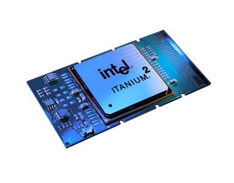

When I joined Microsoft, they were already writing compilers for Intel's next-generation Itanium processor, which didn't actually release until 2001. Itanium was to enable Intel to incorporate all they had learned in creating their x86 processors, first introduced in the 1970s. This 64-bit chip which removed all of the previous compounded ugliness, leaving a simpler and therefore potentially cheaper and faster design in its place.

Beautiful new chip, but even though it included x86 compatibility, it was still incompatible with existing C and C++.14
In spite of the years of R&D and Intel's enormous resources, the chip is hardly used today, even on servers. The reason this chip hasn't yet taken off is literally a billion-dollar question, causing Sun founder Scott McNealy to dub it the “Itanic”.15
The biggest obstacle Intel faced was the fact that our pyramid of C and C++ code running on PCs today is compiled for the x86 processor. Such programs won't run without at least re-compiling the source for another processor, and it might even require changes to the software because it is easy to write non-portable C/C++. Consequently, the adoption of new hardware is significantly limited by the fact that you have to find every piece of code out there, and recompile it. What this ends up meaning is that while a lot of your stuff works, some of it doesn't. Itanium Linux had no Flash player or Adobe Reader till very recently, two significant stumbling blocks for desktop deployments, and even one obstacle can be too many.16
GC solves portability issues because programs written in languages such as Java, C#, Python, etc. are no longer compiled for any specific processor. By comparison a C/C++ executable program is just a blob of processor-specific code containing no information about what functions and other metadata are inside it. Its contents are completely opaque to the system, and the processor just starts blindly executing it. To a GC system, a blob of binary code is insufficient.
Like stores in the real world, GC systems in principle need to close to take inventory. However, unlike stores, they cannot just kick all the existing customers out, or wait for them to leave. So it does the equivalent of locking the doors, not letting any customers in or out (halts execution of code), and tabulating what is on the shelves and in the shopping carts (what memory is in use). Once it has an accurate account, it can then re-open the doors and let existing customers leave, and new ones enter (program execution resumes.)17
When GC pauses code, it needs to know what function the processor is currently executing, and even where in that function it is:
void ExampleFunction()
{
int x = SquareNum(3); //If execution stops here, no memory
//allocated yet.
object o = new object(); //This allocates memory into 'o'.
DoStuffWithObject(o); //If execution stops here, 'o' is in use.
int y = SquareNum(4); //If execution stops here, 'o' is no
//longer in use, and can be cleaned up.
}
GC programs in principle need to know what your processor is doing at each moment in time to precisely inventory memory.
The garbage collector needs to be able to know what objects are “live” in the system at every moment in time, but this depends on exactly what line of code the processor is executing when the inventory process is taking place. A C or C++ executable isn't required to have this sort of information available, but GC requires a rich understanding of the code in order to do its job.18 Therefore, when a program is distributed for a GC language, it is delivered either in source form, or converted to a bytecode, a more efficient format to parse, but with very little loss of information compared to the original source.19
.assembly helloworld {}
.method public static void MyMain() cil managed
{
.entrypoint
ldstr "Hello, World!"
call void [mscorlib]System.Console::WriteLine(string)
ret
}
“Hello, World!” in .Net's bytecode. This is similar to the original C#, though more verbose.
In (all of the common) GC systems, the programmer ships source code or bytecode, not a machine-specific binary blob. If all code written for the Macintosh was written in a GC programming language, it would have been zero work for Apple and third-parties to switch to the Intel processor once the GC runtime was ported!20
In fact, an application written in a GC programming language is automatically portable to chips that haven't even been created yet. We impede our freedom to create new processors when software is not written in portable languages.
Portability is one of the holy grails of computing, and while GC code doesn't completely solve cross-operating system portability, it does solve the situation of running the same code on different processors — itself an enormous step.21
With the source code or bytecode, the GC system has all the information it needs to figure out exactly what is going on when it stops execution. In fact, it also has a lot of information that enables other cool features like reflection, which allows code to query information about an object at runtime. These features create a more dynamic system.
We've discussed two advantages of GC: greater reliability and portability. The next topic is code performance, which is the biggest worry when using modern tools. I have had many discussions with smart geeks who insisted that languages such as C# simply weren't suitable for their “fast code.”